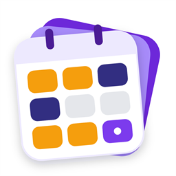

Uygulamayı baştan yeniledik. Herkese açılmadan önce sizin gibi gerçek vardiyalı çalışanların denemesini ve fikrini söylemesini istiyoruz.
Test süresince Premium ücretsizAçılan sayfada "Gruba katıl"a dokunun. Google Play'de kullandığınız Google hesabıyla katılın. Sonra bu sayfaya geri dönün.
Gruba katılAçılan sayfada "Test kullanıcısı ol"a, ardından aynı sayfadaki "Google Play'den indirin" bağlantısına dokunup uygulamayı yükleyin.
Teste katıl ve yükleBiraz bekleyin: Teste katıldıktan sonra uygulamanın Google Play'de açılması 5–10 dakika sürebilir. "Uygulama bulunamadı" ya da "Yükle" yerine başka bir şey görürseniz bir süre sonra buradan tekrar açın.
Birkaç gün normal şekilde kullanın: vardiya düzeninizi kurun, alarm ve not ekleyin, istatistiklere bakın. Sonra bize yazın:
Google Play'deki uygulama sayfasından "Geliştiriciye özel geri bildirim" de gönderebilirsiniz. Her mesajı okuyoruz; önerilere göre güncellemeler çıkaracağız.
Hayır. Uygulama ücretsiz; test süresince Premium özellikler (reklamsız kullanım, stiller, widget'lar, hava durumu) de ücretsiz açık.
Tarayıcıda, telefonda Google Play'de kullandığınız Google hesabıyla oturum açtığınızdan emin olun. Birden çok hesabınız varsa sağ üstten doğru hesabı seçin.
Teste katıldıktan sonra Google Play'in sizi tanıması 5–10 dakika sürebilir. İki adımı da aynı Google hesabıyla yaptığınızı kontrol edip biraz sonra tekrar deneyin.
Eski uygulamada olduğu gibi duruyor. Yeni uygulama ayrı kurulur; vardiya düzeninizi orada yeniden girersiniz.
2. adımdaki sayfayı tekrar açıp "Programdan ayrıl"a dokunabilirsiniz. Uygulamayı silmeniz de yeterli.